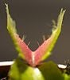
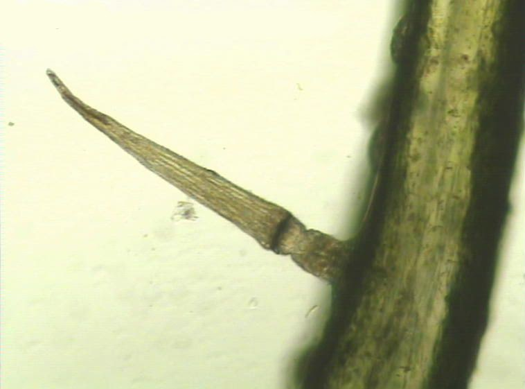
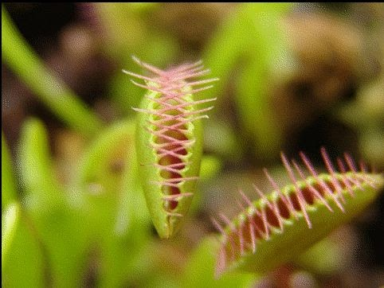
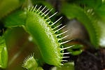
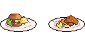
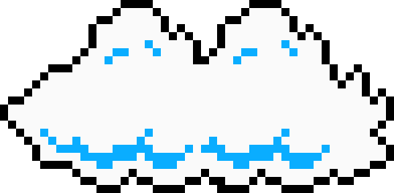

A Vénusz légycsapója (Dionaea muscipula) a szegfűvirágúak (Caryophyllales) rendjébe és a harmatfűfélék (Droseraceae) családjába tartozó rovaremésztő faj.
A Vénusz légycsapója magasra felnyúló száron hozza virágait, nehogy a beporzó rovarok véletlenül a csapdájába essenek. A virágzás igen sok energiát emészt föl a növény részéről. Egyes növénytartók szerint a virágokat megjelenésükkor le kell csípni, mert enélkül a növény pusztulását kockáztatjuk. Más vélemények szerint erre nincs szükség, a virágzás csak átmenetileg lassítja le a növény fejlődését, esetleg csak a fiatal töveknél lehet célszerű a virág eltávolítása, hogy több energiája maradjon a növénynek a növekedésre. Nagyon apró magokat hoz, melyeket vagy azonnal vessük el, vagy tegyük a hűtőbe. Magról általában 4-5 év alatt nő meg, és akár 2-3 évtizedig is élhet. Szaporítani inkább a tőben megjelenő oldalhajtásokról érdemes. Egy növény sohasem hoz hét levélnél többet, ha mégis ez látszódik, akkor ez annak a jele, hogy új kis növényke vált le az anyanövényről. A növényről levágott, majd talajba szúrt levél is meggyökeresedhet.
A növény leveleinek végén helyezkednek el az édes illatot árasztó csapdák. Belsejükben mindkét oldalon 3-3 érzékelőszőr található. Amikor a zsákmány a csapdára száll és az érzékelőket megérinti, a levéllemezek fél másodperc alatt összezáródnak és foglyul ejtik az áldozatot. A kisebb rovaroknak még van esélyük kimenekülni a „fogak” közül, hiszen a növény csapdája először nem zárul be teljesen, így védekezik a túl kicsi zsákmány ellen, melynek megemésztése több energiába kerülne, mint amennyit a növény belőle nyerhet. Ha az áldozat megfelelő nagyságú és ismételten az érzékelőkhöz ér, a csapda légmentesen bezárul és emésztőnedvekkel telik meg, amíg a zsákmány fel nem oldódik. Az emésztés után, ami egy-két hét alatt zajlik le, a csapda újra kinyílik.
|  |  |  |  |
| Ebből a szögből jól láthatók az érzékelők | Egy érzékelőszőr mikroszkóp felvétele | A csapda záródása | Egy ideig nyitva áll a menekülőút a kisebb rovaroknak |
Nemzetségének egyetlen faja. A természetben megtalálható 'typica' forma mellett az utóbbi években már a növénynemesítők számtalan változatát állították elő. A sok új változat megjelenése a néhány évtizede megjelent, in-vitro szaporításnak köszönhető, amely során kis növényi részekből megfelelő tápoldatban új kis növények fejlődnek ki. Az ilyen módon történő tömeges szaporítás melléktermékei tulajdonképpen a különféle változatok, amelyek az eredeti forma mutáció okozta elváltozásait hordozzák külső megjelenésükben. Ezen típusok színükben, formájukban, a levélrozetta alakjában, a csapók színeződésében és végül a szélső tüskék, fogak alakjában különböznek.
A légycsapó kedveli a sok napsütést, ennek hatására csapói szép pirossá válnak, de félárnyékban is szépen fejlődik. Mivel mocsaras területen él, nyáron célszerű cserepestül 1-1,5 centiméter vízbe állítani. A csapvíz nem felel meg az öntözéshez, mert számos oldott ásványi anyagot tartalmaz. Csak a lágy víz (esővíz, desztillált víz) alkalmas öntözésére. A növény kedveli a magasabb páratartalmat, de ha cserepe alatt folyamatosan áll a víz, az is tökéletesen elegendő. Szobában is nevelhető például egy ablakpárkányon, de magas páratartalmú környezetet biztosító terráriumba, vagy floráriumba is helyezhető. Ilyenkor gondoskodni kell róla, hogy sok, mesterséges fényt kapjon. Télen a növény nyugalmi időszaka következik, ilyenkor fejlődése lelassul, levelei kissé visszapusztulnak. Ebben az időszakban a 3-15 °C körüli hőmérsékletet, és az állandóan, de épphogy nyirkos talajt igényli. Alkalmanként elviseli a -10 °C-ot is, de eredeti élőhelyén (Észak-Amerika keleti partvidéke, Észak- és Dél-Karolina, Wilmington város mintegy 80-100 mérföldes körzete) a téli időszakban sem esik tartósan a hőmérséklet fagypont alá. A légycsapó a legjobban tőzegben, esetleg szárított tőzegmohában nevelhető, amelybe kertészeti perlit vagy mészmentes homok is keverhető. Nem szabad tápoldatozni, hiszen eredeti élőhelyén a tápanyagszegény talaj miatt fejlődött így a növény, a tápoldat használata szinte biztosan kiöli.
Fennmaradása céljából „etetni” a növényt nem szükséges, mert valószínűleg megfogja magának azt a kis mennyiségű rovart, amire szüksége van. Esetleg a növekedési időszakokban lehet segíteni fejlődését havi 1-2 zsákmány adásával: csak megfelelő méretű és fajtájú rovarral vagy puhatestűvel etethető, mivel a túl erős préda kirághatja magát a csapda falán, károsítva a növényt. Egyes növénytartók szerint az „éheztetés” külön széppé teszi a Dionaea-t, ilyenkor a csapók belseje jobban bepirosodik. Az emészthetetlen kitinpáncélt és egyéb részeket a természetben a szél és az eső távolítja el a csapdákból, ami szobai körülmények között nem következik be, ezért csipesszel érdemes lehet kiszedni a maradványokat, mivel ha sokáig ott maradnak a növényhez tapadva, könnyen megjelenhetnek a baktériumok és a penészgombák, ami viszont a csapó elrohadását eredményezheti. Mivel a táplálékmaradék eltávolítása csipesszel igen nehézkes a csapó véletlen összecsukása nélkül, ezért inkább érdemes megfelelő zsákmányt adni a növénynek. Az emberi fogyasztásra való hús vagy felvágott nem alkalmas a növény táplálására, mert a bennük lévő só, savak és adalékanyagok végérvényesen elrohasztják a növényt. A csapdák néhány összezáródás után elöregednek és elhalnak; ez természetes jelenség, mint ahogy az is, hogy helyettük új csapókat növeszt a növény. A csapdák számára eleve megerőltető a mozgás és az emésztőnedv termelése, ezért fölösleges terhelni a légycsapót túlzásba vitt etetéssel, vagy a csapók piszkálásával.
Mivel a Vénusz légycsapója természetes élőhelyén gyakran hetekig víz alá kerül, túlöntözni szinte lehetetlen. Hosszabb távollét esetén, vagy az esetleges kártevők eltávolítása céljából hasznos lehet a teljes elárasztás.
|  | |
 | |
| 5 legismertebb magyar étel | The Beatles | Programozási alapok | Felhők |
| Kezdőlap |